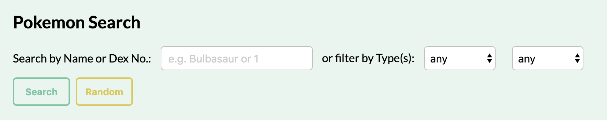
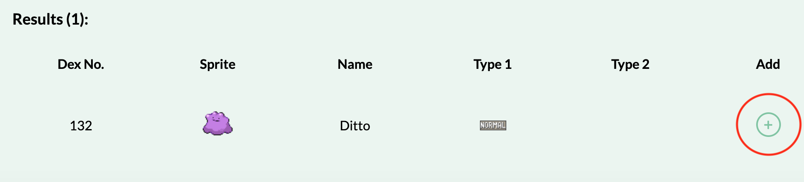
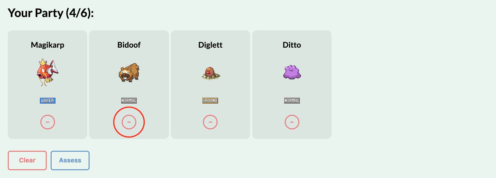
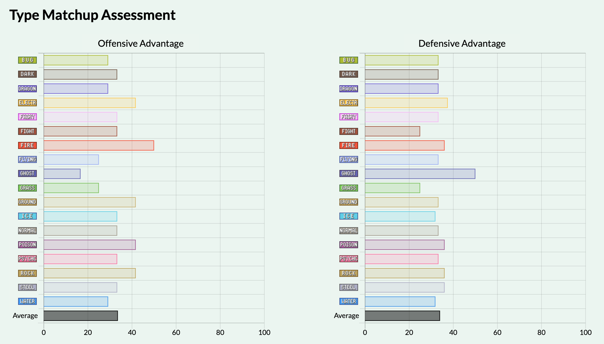

Final Project Summary
Jump to Section:
- Topic and Purpose
- Instructions
- Pokemon Search
- Assemble Your Team
- Assess Your Team
- Extras Used
1. Topic and Purpose:
This project is a tool that allows people to build Pokemon teams and see their weaknesses and strengths. It is for Pokemon players who want to plan out their teams casually or competitively
2. Instructions:
Step 1: Pokemon Search
To begin, head over to the Build via the navbar. On the Build page, you will see the following search bar:

Search for Pokemon in one of the following ways:
- Enter the exact name of a Pokemon or a Pokedex number. Click the Search button.
- Select the type or type combinations of the Pokemon you want to search for. Click the Search button.
- If all inputs are left in their default states, clicking the Search button will return all Pokemon.
- Click the Random button to generate a list of 10 random Pokemon.
Invalid searches will prompt appropriate error messages to appear.
Step 2: Assemble Your Team
If your search goes through without error, you should see the results below the search bar. An example search result is shown below:

To add Pokemon to your team, simply click on the circled green "plus" button to the right of the result. Keep in mind that you can only have a maximum of 6 Pokemon in your party. Pokemon that you have added to your team will appear in your party at the top of the page like so:

To remove a particular Pokemon from your party, simply click on the circled red "minus" button underneath the Pokemon you want to remove. To remove all the Pokemon in your team, click the Clear button underneath your party.
Step 3: Assess Your Team
Once you are satisfied with your team, head over to the Assess page by clicking on the Assess button underneath your party or via the navbar. You will see the following graphs:

The graphs show how strong your team is against each type offensively and defensively. You can go back to the Build page to make changes to your team at any moment.
3. Extras Used:
- Event-driven DOM manipulation
- The search function displays results using DOM manipulation. A for loop is used to create each row of the results.
- The ability to add and remove Pokemon also uses DOM manipulation.
- JSON / JSONP API
- PokeAPI is used to obtain all Pokemon data via the GET method. The retreived JSON objects are then iterated through a for loop for DOM manipulation.
- Web Storage
- Local storage is used to store user's team information so that when the page is refreshed, the user wouldn't have to start building his or her team from scratch.
- The Assess page borrows local storage information to calculate the team's type matchup.
- JS / jQuery Plugins
- jQuery is used to simplify JS. For instance, $(selectors) is used instead of document.querySelector(selectors).
- Chart.js is used to create the type matchup graphs in the Assess page. In brief, the plugin converts arrays of data to a chart of choice via canvas rendering.